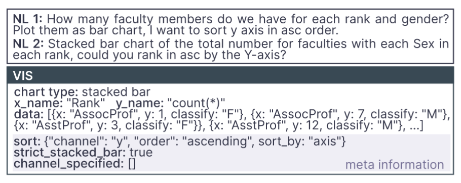
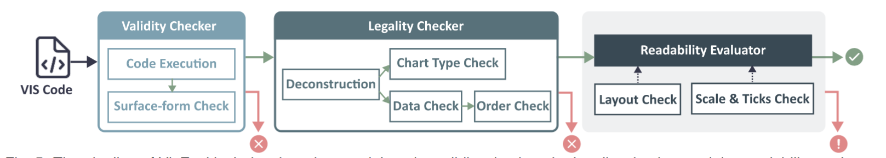
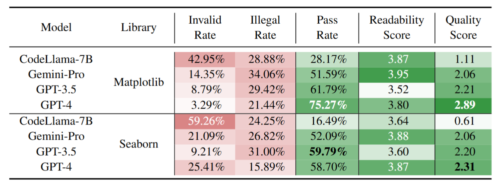
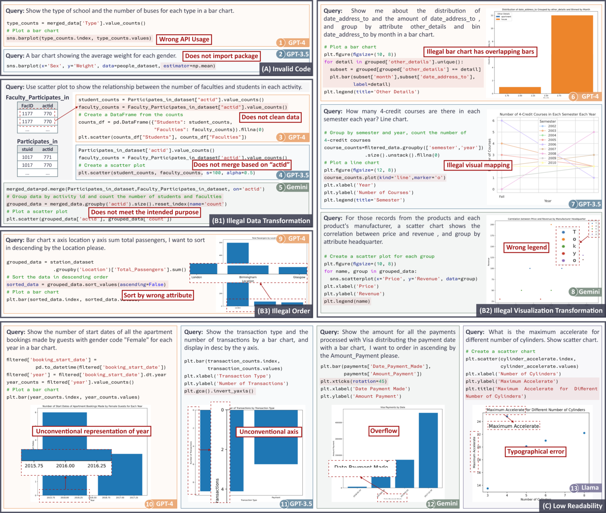
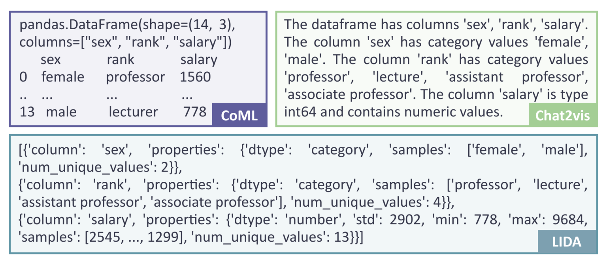
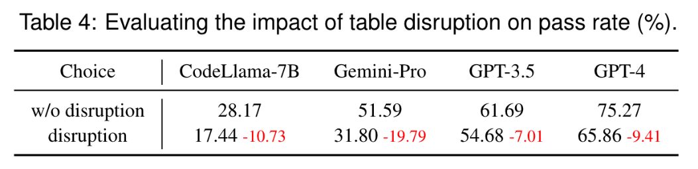

VisEval⚓︎
约 3326 个字 预计阅读时间 17 分钟
概述
- 官方报告（总结的很不错，通俗易懂）
- 论文（VIS 2024 Best Paper）
- GitHub 仓库
- 摘要：将自然语言转换为可视化 ( NL2VIS ) 在视觉数据分析方面显示出巨大的前景，但它仍然是一项具有挑战性的任务，需要多种低级实现，例如自然语言处理和可视化设计。预训练大型语言模型 ( LLM ) 的最新进展为从自然语言生成可视化开辟了新的途径。然而，缺乏全面可靠的基准阻碍了我们对 LLM 在可视化生成方面能力的理解。本文通过提出一种名为 VisEval 的新 NL2VIS 基准测试来解决这一差距。首先介绍一个高质量和大规模的数据集。该数据集包括涵盖 146 个数据库的 2524 个代表性查询，并与准确标记的基本事实 (ground truths) 配对。其次倡导一种全面的自动化评估方法，涵盖有效性 (validity)、契合性 (legality) 和可读性 (readability) 等多个维度。通过使用许多异构检查器系统地扫描潜在问题，VisEval 提供了可靠且值得信赖的评估结果。我们在一系列最先进的 LLM 上运行 VisEval。本项目的评估揭示了普遍的挑战，并为未来的发展提供了重要的见解。
- 关键词：可视化评估、自动可视化、大语言模型、基准测试
引言⚓︎
NL2VIS 任务旨在将自然语言查询转换为可视化图表，帮助用户更直观地理解复杂数据。尽管近年来预训练的大语言模型（LLMs）在自然语言处理任务中表现出色，但在生成可视化图表时仍面临诸多挑战，如代码执行失败、数据转换错误、排序问题等。现有的 NL2VIS 评估方法在数据集质量、评估指标的全面性和方法的可靠性方面存在不足。VisEval 的提出填补了这一空白，提供了一个可靠的基准测试工具。
大模型在生成可视化时遇到的问题
注
这部分实际上是摘要的扩展版，而且这些内容也会在接下来的部分详细介绍，所以这里省去了很多重复的内容。
现有工作的局限⚓︎
- 自然语言到可视化生成：传统方法依赖于语义解析 (semantic/lexical parsing) 和深度学习技术，而 LLMs 的出现为 NL2VIS 任务提供了新的方向。现有的 LLMs 方法如 Char2vis 和 LIDA 通过提示工程生成可视化代码，但仍存在代码执行失败、数据转换错误等问题。
- 生成可视化的评估：
- 人工评估虽然被视为“黄金标准”，但其耗时费力，难以大规模推广
- 自动评估方法能够评估代码和 JSON 结构的相似性，并将数据映射、标记和轴与真实数据进行比较，但应用范围有限，并对代码相似性这一衡量标准仍然存疑
- 基于规则的评估能够检查数据的匹配情况，但常常忽视可视化的可读性问题
- 利用大语言模型评估生成代码的方式尚未经过充分验证，其可靠性存疑
- 现有的评估方法主要关注可视化的正确性，而忽略了可读性等其他维度。VisEval 通过引入多维度评估框架，提供了更全面的评估方法。
- 可视化数据集：现有的 NL2VIS 数据集要么局限于特定领域，要么缺乏准确的标注。VisEval 构建了一个高质量、大规模的数据集，涵盖了广泛的领域和查询类型。
预备知识⚓︎
- NL2VIS 任务定义：NL2VIS 任务通常包括将自然语言查询和表格数据作为输入，生成可视化代码，并在沙盒环境中执行代码以生成最终的图表。
- 初步研究：通过对 300 个查询的初步研究，作者发现：
- 低质量的查询会导致无意义的结果
- 生成结果的内在缺陷：存在代码无效、数据转换错误、可读性差等问题
- 很难得到省力且可靠的评估：现有的自动化评估方法在可靠性和全面性方面存在不足
- 基于上述现实问题，为基准测试总结出以下几点要求：
- R1：合并高质量和大规模数据集
- R2：支持多维评估
- R3：自动且可靠的评估
VisEval 基准测试⚓︎
-
数据集构建：
-
基准数据集应满足的要求：
- 大规模覆盖：数据集需要包含来自不同领域的大量查询和数据库，以减少偏差；此外，确保平衡的数据分布，以防止来自特定数据库的偏差
- 高质量查询：数据集中的查询必须明确且合理，在描述合理可视化时明确指定选定的列、聚合和图表类型
- 准确的基本事实：数据集中的基本事实数据应准确标记，并能够精确描述可接受的可视化效果
- 有价值的查询选择：排除过于简单的查询，这些查询是模型几乎总是可以回答的查询
-
数据集的构建过程：
-
高质量的查询选择：
- 基于规则：设计并实施了 8 条规则来过滤和更正查询
- 基于 LLM：使用多个 LLM 投票决定，提高结果可信度，并减轻了人类专家的工作量
- 基于人工：人类专家审查了查询，以确保其清晰度、合理性和不重复
-
精确的基本事实标注：基本事实包括图表类型、绘制的数据和元信息 (meta-information)（详细说明了隐式和显式查询细节，在评估期间用作约束，以确定最合适的图表）
-
数据集再平衡 (rebalancing)：
- 用一个过滤器来排除过于简单的查询，最终得到了 1,150 个不同的可视化 (VIS) 和 2,524 个 (NL, VIS) 对，涵盖 146 个数据库
- 考虑到语言固有的灵活性，保留了多个描述同一 VIS 的 NL 查询，在评估过程中将它们视为一个内聚实体
- 此外，还可视化分为四个不同的硬度级别：简单、中等、困难和特别困难
(NL, VIS) 对
-
-
-
评估框架：VisEval 的评估框架包括以下模块
- 有效性检查器 (validity checker)：代码生成后，框架会执行代码，并检查是否成功生成了可视化，以确保代码的有效性。
- 契合性检查器 (legality checker)：一旦代码通过了有效性检查，契合性检查模块会基于 SVG 图像的解构，提取图表类型、数据、顺序等信息，并根据数据集中注释的元信息评估图表的契合性。这一步是为了确保生成的图表能够符合用户查询的要求，并且数据映射合理。
- 可读性评估器 (readability evaluator)：可读性评估是框架中最具挑战性的部分。评估可读性需要考虑多方面因素，例如布局、比例和颜色等。为此，研究员们借助了 GPT-4V(ISION) 的强大能力，并将可读性评估任务分解为多个更可控的子问题，具体来说分为以下几步：
- 布局检查：模拟浏览器环境的方法能够精确确定画布的大小以及 SVG 格式的可视化元素的大小和位置，从而有助于准确评估溢出和重叠。
- 比例尺和刻度检查：
- 总体可读性评分：考虑了布局和比例以外的各种因素，例如标题、标签、颜色等，并给出了 1 到 5 分的分数。如前所述，上述检查都提供了评估，并附有对其评估的简洁理由。然后，这些评估将集成到总体可读性评级的提示词中。该提示词还包括查询，通过与可视化的特定需求保持一致，实现更精确的判断。
-
质量保证：通过以下方法，VisEval 确保了评估框架的可靠性和准确性。
- 数据呈现
- 衡量标准：使用 SRCC 量化自动评分和人工评分之间的一致性
- 结果分析
评估⚓︎
-
实验设置：
- NL2VIS 提示词：CoML4VIS（在 CoML 的基础上修订得到）
- 可视化库：Matplotlib、Seaborn
- 模型：GPT-4、GPT-3.5、Gemini-Pro、CodeLlama-7B
- 衡量标准：
- 质量分数 (quality score)：对生成结果质量的整体评估
- 通过率 (pass rate)：有效或契合结果与查询总数的比率，但不包括此计算中的可读性分数，
- 无效率 (invalid rate)
- 不契合率 (illegal rate)
- 可读性分数 (readability score)
-
实验结果：
- 实验 1：测试了不同模型在使用 Matplotlib 和 Seaborn 库时的表现。如下表所示，VisEval 揭示了不同模型在生成可视化方面的显著差异。以 GPT-4 为例，在使用 Matplotlib 库生成可视化时，其质量得分为 2.89（满分为 5
） ，虽然表现尚可，但依然有改进的空间。相对而言，在使用 Seaborn 库时，尽管其代码通常比 Matplotlib 更为简洁，但所有模型的得分均较低，这一结果令人意外。
通过深入分析，研究员们发现大语言模型在可视化生成的多个阶段都容易出现错误，如下图所示。这些阶段包括代码编写、数据转换、可视化转换以及排序等方面。除了准确性之外，模型生成的图表在可读性方面也频繁出现问题，而这一点在以往的研究中常常被忽视。
 - 实验 1：测试了不同模型在使用 Matplotlib 和 Seaborn 库时的表现。如下表所示，VisEval 揭示了不同模型在生成可视化方面的显著差异。以 GPT-4 为例，在使用 Matplotlib 库生成可视化时，其质量得分为 2.89（满分为 5
-
实验 2：不同提示词设计对模型性能的影响。其中特别分析了三种基于大语言模型的可视化生成方法：LIDA、Chat2VIS 和研究团队提出的 CoML4VIS。实验结果表明，提示词设计对模型的表现具有显著影响。
- 由于注意到这三种方法采用了不同的表格格式，所以研究员们还进行了额外的实验。实验中研究员们保持 CoML4VIS 中其他条件不变，仅更改表格格式。如图 5 所示，不同的大语言模型展现出了对不同表格格式的偏好。这一发现提示研究员们，可能需要针对不同模型设计不同的提示词，以优化其表现。
 -
实验 3：无用数据表对生成可视化性能的影响。如下表所示，当给大模型的提示词中包含两张无用的数据表时，所有模型的性能均显著下降。这一结果表明，模型在处理复杂输入时容易受到干扰，强调了在选择数据时确保其相关性的重要作用。

讨论⚓︎
- NL2VIS 的潜在发展：未来的改进方向包括引入代码检查工具、利用库 API 文档指导 LLMs、将 NL2VIS 任务分解为子任务、通过反馈迭代生成等。
- 局限性与未来工作：
- VisEval 目前主要评估 Python 库生成的可视化，未来计划扩展支持其他工具（如 Vega-Lite）
- 并增加对美学和表达性等高级指标的评估
思考：这个项目还有什么改进空间呢？
以下建议由 DS 生成，我筛选了其中几份现实且有价值的建议：
-
数据集扩展与多样性提升：
- 领域覆盖：当前数据集涵盖 146 个数据库，但主要集中在常见领域。可增加医疗、金融、社交媒体等领域的复杂数据，提升跨领域泛化能力。
- 多语言支持：目前仅支持英语查询，未来可纳入多语言的自然语言输入，验证 LLMs 的多语言生成能力。
- 复杂图表类型：当前数据集覆盖 7 种常见图表（如条形图、散点图
） ，可扩展至热力图、桑基图、动态交互图表等更复杂的类型。
-
模型多样性与适应性改进：
- 开源模型覆盖：当前测试集中于闭源模型（如 GPT-4、Gemini-Pro
） ，未来可纳入更多开源模型（如 LLaMA-3、Mistral） ，探索其潜力与优化方向。 - 领域专用模型：针对特定领域（如科学计算、金融分析）微调的 LLMs，可能生成更精准的可视化代码，需进一步验证。
- 开源模型覆盖：当前测试集中于闭源模型（如 GPT-4、Gemini-Pro
-
多模态输入与输出整合：支持结合图像（如用户手绘草图）或语音输入生成可视化，扩展 NL2VIS 的应用场景；并且可以附带语音解读或动态演示，提升用户理解效率。
结论⚓︎
VisEval 是一个全面的 NL2VIS 基准测试工具，通过构建高质量数据集和自动化评估框架，揭示了当前 LLMs 在生成可视化图表时的挑战，并为未来的改进提供了重要见解。
评论区